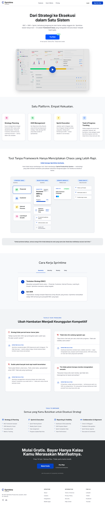

OKR Objective
QuarterlyMeningkatkan MRR sebesar 20%
Key Result: mencapai revenue recurring Rp250 juta per bulan.
Progress OKR64%
BSC + OKR + Sprint, terhubung langsung ke task harian setiap anggota tim. Sprintime bukan hanya tool — ini adalah framework kerja yang mengubah rencana besar menjadi hasil nyata.
14 hari penuh. Semua fitur. Tanpa kartu kredit.

Susun strategi bisnis dengan framework BSC yang sudah disederhanakan. Financial, Customer, Internal Process, Learning & Growth — semua dalam satu tampilan.
Set Objectives & Key Results yang terhubung langsung ke strategi. Tidak ada lagi OKR yang hidup sendiri di spreadsheet.
Jalankan sprint mingguan atau dua-mingguan dengan prioritas yang jelas. Setiap sprint terhubung ke OKR — bukan sekadar to-do list biasa.
Setiap anggota tim punya task yang jelas, terlacak, dan bermakna. Anda sebagai Leader bisa lihat progress real-time tanpa harus nanya satu per satu.
Inilah kenapa Sprintime berbeda.
Kami tidak hanya membangun tool. Kami membangun Sprint Productivity System — metodologi yang telah terbukti membantu perusahaan Indonesia menghubungkan visi mereka ke eksekusi harian.
Strategy (BSC)
OKR Objective
QuarterlyKey Result: mencapai revenue recurring Rp250 juta per bulan.
Weekly Sprint
Sprint minggu ini fokus pada eksperimen onboarding dan follow-up trial user.
Daily Tasks
"Untuk pertama kalinya, semua orang di tim Anda bekerja ke arah yang sama dan Anda bisa melihatnya secara real-time."
Masukkan perspektif bisnis anda — Financial, Customer, Internal Process, Learning & Growth. Sprintime memandu setiap langkah.
Terjemahkan strategi menjadi Objectives & Key Results yang terukur. Sprintime memastikan setiap OKR terhubung ke perspektif BSC yang tepat.
"Setiap kuartal bikin OKR, tapi pertengahan jalan sudah lupa. Tim jalan sendiri-sendiri."
Sprintime menghubungkan OKR langsung ke sprint mingguan. Tim tidak bisa lupa — karena setiap minggu mereka bekerja dalam konteks tujuan besar perusahaan.
"Saya harus chat satu per satu untuk tahu progress. Tidak ada visibility sama sekali."
Dashboard Sprintime memberi kamu visibility real-time — siapa mengerjakan apa, progress sprint berapa persen, OKR mana yang on-track dan mana yang butuh perhatian.
"Kami pakai Notion untuk docs, Trello untuk tasks, spreadsheet untuk OKR. Tidak ada yang nyambung."
Sprintime menggantikan semuanya dengan satu sistem yang kohesif. Framework-nya sudah built-in — tidak perlu setup manual berbulan-bulan.
"Karyawan hanya tahu task mereka, tapi tidak tahu hubungannya ke tujuan perusahaan."
Di Sprintime, setiap task punya konteks — terhubung ke sprint, ke OKR, ke strategi bisnis. Tim yang paham kenapa bekerja jauh lebih produktif dari yang hanya tahu apa.
Free 14 hari. Semua fitur. Tidak perlu kartu kredit.
Join thousands of companies worldwide.